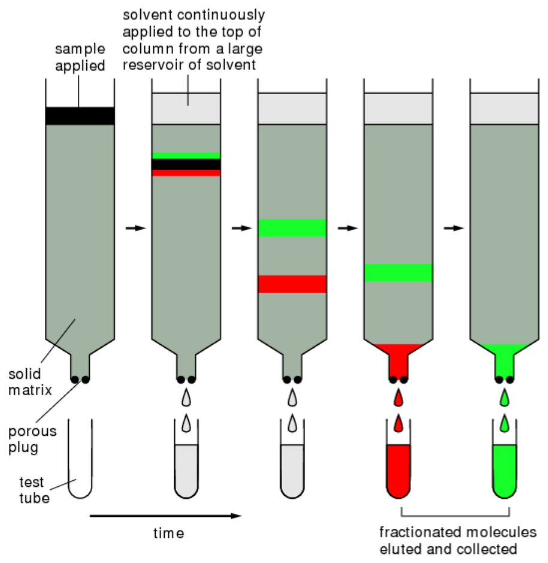
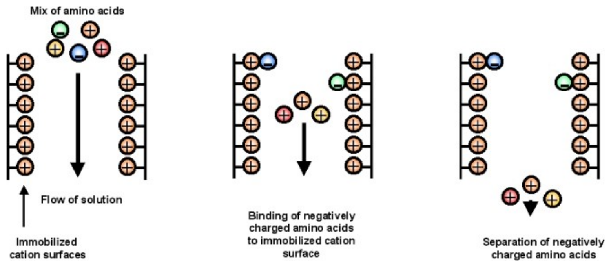
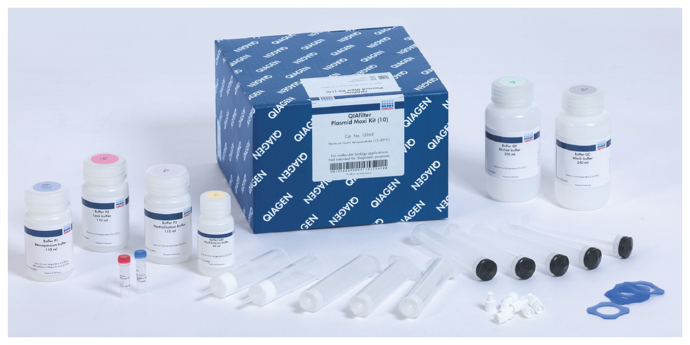
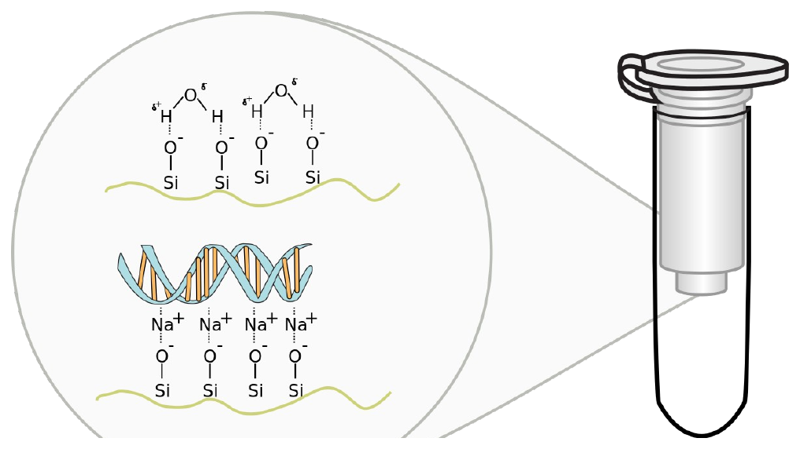
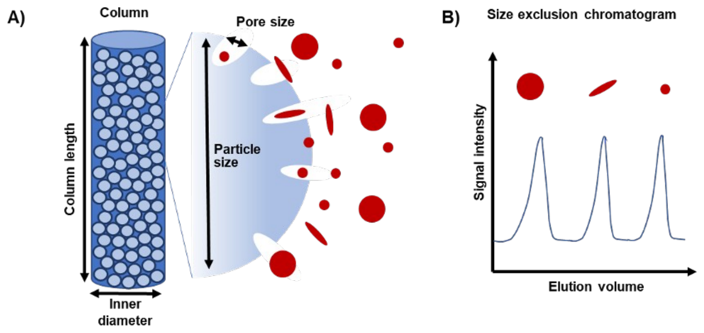
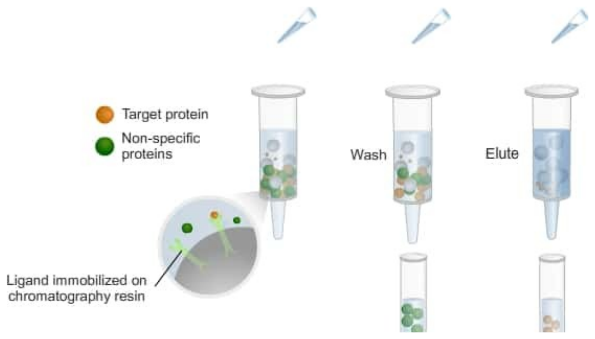
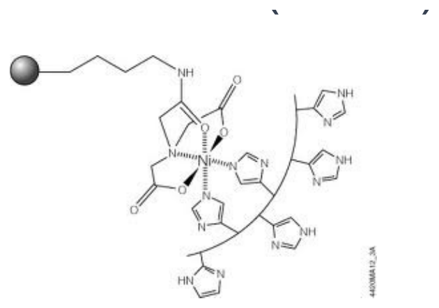
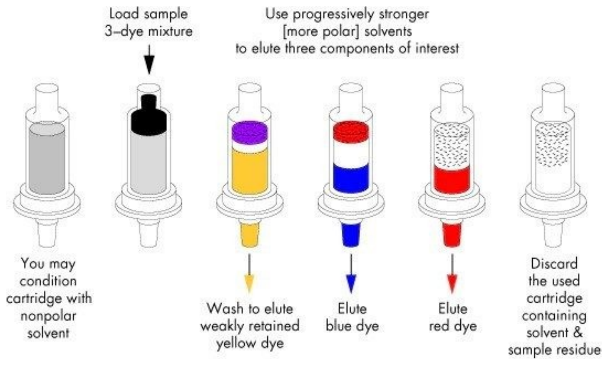

After Ion Chromatography, Skoog et al., chem.libretexts.org
What determines the type of separation and degree of separation is the chemistry of the solid support and the mobile phase solution. If you have a positively charged solid support, such as beads coated with amino groups, negatively charged chemicals will be impeded as they move through the column and thus come out later than the positively charged ones. You call this anion exchange chromatography. There is also cation exchange chromatography where you put negative charges like carboxylate groups on the beads. Sometimes, this binding is transient and some compounds come off a little later than others. However, if the retention is strong enough, this essentially becomes Boolean where the negatively charged species are stuck on the column and you can essentially wash indefinitely without the compound coming off. In these cases, you can get the substance very clean because you can extensively wash out the other species. To elute the negatively charged species off, you can change the mobile phase to a salty solution, or perhaps play with the pH, or switch to a different solvent to knock them off. Charged amino acids flowing past an immobilized positively charged surface: the negatively charged ones are retained, the positively charged ones wash through.Could I use anion exchange chromatography to purify DNA?
Yes.


Guanidinium Chloride


| Ligand | Target |
|---|---|
| Antibody | Antigen/Epitope |
| Lectin | Carbohydrates |
| Glutathione | Glutathione S-transferase |
| Chitin | Chitin Binding Domain |
| Cellulose | Cellulose Binding Domain |
His6-Tag = HHHHHH (6 histidines in a row, on N or C terminus)


After Waters, Beginner’s Guide to SPE, waters.com
Solid phase extraction (SPE) is a chromatographic technique used for the isolation and purification of small molecules from complex mixtures. In SPE, a solid phase (such as silica gel, activated carbon, or polystyrene) is packed into a column and used to selectively adsorb the target small molecules from a sample. The unwanted components are then washed away, and the target molecules are eluted from the column using an appropriate solvent. A cartridge run through condition, load, and three elutions of increasing solvent strength: a three-dye mixture comes off one color at a time.